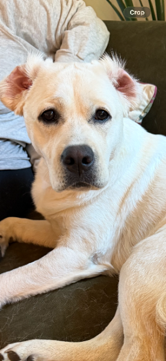

Find a pup
Filter by Quit Crew, still-competing legends, or pups who just want to talk about The Incident at daycare.
enter the fitting room →
Some of us are quitting the snack. Some of us are still chasing a personal best. All of us have been yelled at in a voice usually reserved for tax fraud.
This is Millie's clubhouse: a Limited Too fever dream for dogs who have tasted the forbidden cookie and lived to wag about it.
Earn 25 points every time you walk PAST the snack. Redeemable for squeaky toys and zero shame.
Filter by Quit Crew, still-competing legends, or pups who just want to talk about The Incident at daycare.
enter the fitting room →Shame the habit, not the dog. Track a Leave It streak, play the mall mini-game, and request a sponsor who has already been through the sniff.
start a streak →Post a personal best (audacity points count double if a guest was watching) or vent about how unfair grass is.
grab a hot pink bench →Hi. I am Millie. I have pink ears, a dark little nose-mustache, and a problem. My human does this whole dramatic gasp when I go in for a taste test. I am trying. I also remember my greatest hits. If you are a pup in either camp, you can sit on my couch. There is fur on it already.